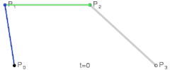
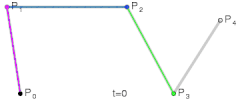
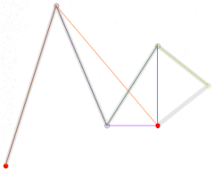

L10-L12:Geometry
GAMES101（现代计算机图形学入门）笔记 - Yu_Tang
1 几何的隐式描述
隐式（Implicit）描述是通过描述点之间关系来规定点的属性，比如
更一般地定义为
隐式描述的缺点在于不直观，优点在于实现上可以快速判断给定点是否在指定集合中或是否在区域内/外；
显式（Explicit）描述是指所有点都是直接定义或者通过参数映射得到的（参数映射如下图）；

相比于隐式描述，显式描述的优点在于能够快速确定有哪些点在指定集合中，缺点在于难以判断点在区域内/外；
下面将介绍一些隐式表述的方法
1.1 代数曲面(Algebraic Surfaces)
表面是有关 x ，y ，z 的多项式的零点集合；

1.2 CSG(Constrctive Solid Geometry)
通过基本几何体的布尔（集合？）运算来定义更复杂的几何体；

1.3 距离函数(有向距离场)(Distance functions, Signed Distance Field)
通过定义距离函数描述空间上任何一点到几何体表面的最小（有向）距离来构造几何体；

距离函数可以通过函数运算来获得两个几何体的中值（混合）；

1.4 水平集
类似于距离函数，水平集是将距离函数定义域离散化到网格中；

1.5 分型（Fractals）
分型是一种自相似结构；
2 几何的显式描述
2.1 点云（Point Cloud）
不考虑表面的连续性，将表面用表面上的足够多点表示；
通常用于大量数据的情况（ point/pixel >>1 ）
这种方式可以容易地表示任何类型的模型，但在样本密度低的部分难以绘制；
在处理时，点云经常被转换为多边形网格；
2.2 多边形面（Polygen Mesh）
易于处理；一般通过三角形或四边形网格实现；
由于需要处理图形间的连接关系，需要更复杂的数据结构；
是图形学中最常见的表现形式；
.obj 文件格式（The Wavefront Object File）
只是一个指定顶点、法线、文本坐标及其连接性的文本文件；
以下图为例，其中存储了一个正方体

其中 line 3-10 定义了8个顶点，line 12-25 定义了14个纹理坐标，line 27-34 定义了6个不同的平面法向量，line36-47定义了12个三角形，其中 4/3/1 含义为此处点坐标为4号，纹理坐标为3号，法线为1号, 即为定义了使用第几个前述值；
2.3 曲线(Curves)
2.3.1 贝塞尔曲线(Bézier Curves)
用一系列的控制点去定义曲线；
对于\(P_0,..P_{n+1}\)所定义的 n 阶贝塞尔曲线，需要满足以下性质：
- 在\(P_0\)开始、在\(P_{n+1}\)结束；
- 在起点处切向为\(n\overrightarrow{P_0P_1}\)、在终点处切向为\(n\overrightarrow{P_{n}P_{n+1}}\)；
- 对于曲线的仿射变换等于对控制点仿射变换后绘制曲线；（投影变换不属于仿射变换）
- 曲线在控制点形成的凸包内；
2.3.2 De Casteljau算法（de Casteljau Algorithm）
考虑已经给定的一系列控制点，如何绘制对应的贝塞尔曲线；
先将问题简化为三个点，此时生成的曲线为二阶贝塞尔曲线（quadratic Bezier）；

对于曲线上参数为 \(t (t∈[0,1])\)的点，定义如上图；其中
足够精度在定义域内枚举 \(t\) 即可计算曲线；
考虑四个点定义的贝塞尔曲线；

更广泛地，对于 \(n+1\) 个控制点（\(b_0,...,b_n\)），\(n\) 阶贝塞尔曲线有代数形式
通过定义与参数有关的多项式对控制点进行插值；实际应用上也可以使用递归实现De Casteljau算法。
递归实现请见 [[作业4-Bezier Curve#1 任务|De Casteljau递归实现]]
公式证明
n 阶贝塞尔曲线由 n+1 个控制点\(b_0,b_1,...,b_n\)定义，德卡斯特里奥算法的本质是：通过 n 层线性插值 逐步缩减控制点集，最终得到曲线上的点\(b^n(t)\)。具体过程如下：
第 1 层插值：对相邻控制点\((b_0,b_1),(b_1,b_2),...,(b_{n-1},b_n)\)分别做线性插值（权重\((1-t,t)\)），生成 n 个中间控制点：
第 2 层插值：对第 1 层的相邻中间控制点\((C_1^0,C_1^1),...,(C_1^{n-2},C_1^{n-1})\)重复线性插值，生成 n-1 个中间控制点：
重复 n 层：每一层都对前一层的相邻点做线性插值，控制点数量逐层减 1，直到第 n 层仅剩下 1 个点，即为\(b^n(t)\)。
最终点\(b^n(t)\)是所有原始控制点\(b_j\)的 线性组合（因每一步插值都是线性运算，整体满足线性叠加性），即：
其中\(k_j(t)\)是原始控制点\(b_j\)对最终点的贡献系数，
- 从\(b_j\)到最终点，需要经过 n 层插值，每层只能与左邻或右邻点组合；
- 要保留\(b_j\)的 “贡献”，需在 n 层插值中：恰好 j 次选择右邻点（权重 t），恰好 (n-j) 次选择左邻点（权重 1-t）（否则会被其他控制点的组合抵消）；原因如下:
选择 “左邻融合”（权重\(1-t\)）：索引减 1（比如第 k 层索引\(m\)，融合后到第 k+1 层索引\(m-1\)）；
选择 “右邻融合”（权重\(t\)）：索引不变（比如第 k 层索引\(m\)，融合后到第 k+1 层索引\(m\)）；
经过\(n\)层后，索引变化的总结果必须是：初始索引\(j\) → 最终索引 0。由此可以求出左邻融合的次数为 \(j\) 次,对应的右邻融合的次数为 \(n-j\) 次
这是自底向上分析,也可以自顶向下分析.把每一层线性插值得到的点画在一个金字塔中,把每层点之间的依赖关系用连线表示出来,\(b_j\) 对最终点的贡献可以通过从\(b_j\) 到最终点的连线数量得出.
- 从 n 层插值中选择 j 次 “右邻（t）” 的路径数量，恰好是组合数\(\binom{n}{j}\)（即 “n 选 j” 的方案数）；
- 每条路径对应的权重乘积为\(t^j(1-t)^{n-j}\)，所有路径的权重叠加后，即为\(b_j\)的总贡献系数：\(k_j(t) = \binom{n}{j}t^j(1-t)^{n-j}\)。
下面是一些动图展示
贝塞尔曲线与de Casteljau算法 - 张火火isgudi - 博客园
三次曲线
三次曲线由定点确定，通过六次线性插值来构建：
{kind=link}

高次曲线：
四次曲线通过十次线性插值：
{kind=link}

五次曲线通过十五次线性插值：
{kind=link}

上述例子都是二维的，对三维点同样有效；
2.3.3 逐段贝塞尔曲线(Piecewise Bézier Curves)
在贝塞尔曲线阶数较高（控制点较多）的时候，难以精细控制曲线；
考虑对贝塞尔曲线每四个控制点进行逐段定义；
在曲线连接处，保证另外两个控制点关于共用控制点反向、共线且等距即可保证曲线光滑；
2.3.4 曲线的连续性（Continuity）
\(C^0\) 连续：曲线首尾相接（值连续）（\(a_n=b_0\)）；
\(C^1\) 连续：相接处切线大小相等、方向相同（导数连续）\(a_n=b_0=\frac 12(a_{n-1}+b_1)\)；
\(C^2\) 连续即为二阶导数连续；
2.3.5 B-样条曲线(Basis Splines)
相比于贝塞尔曲线，B-样条曲线具有局部性；
B样条与非均匀有理B-样条（NURBS）暂不赘述；
2.4 曲面(Surfaces)
2.4.1 双立方贝塞尔曲面（Bicubic Bézier Surface Patch）
绘制过程可以认为是在两个方向上先后进行贝塞尔曲线绘制；

3 网格处理（Mesh Operation）
3.1 网格细分(Mesh Subdivision)
对网格进行加面，使其更光滑；
3.1.1 Loop细分
Loop 细分（Loop 为人名，与循环无关）的三角形网格细分过程.用一句话概括就是：将三角面细分，然后使用相邻顶点的位置信息调整新顶点和旧顶点
- 将三角形数量增多；连接三角形三边中点使三角形一分为四；

- 调整三角形位置；
- 对于新顶点(边中点)：
A、B 是新顶点所在边的端点，对新顶点位置的影响更大（权重3/8）；C、D 是间接相邻的顶点，影响较小（权重1/8）。这种加权方式能保证细分后曲面的光滑性和形状连续性。

- 对于新顶点(边中点)：
2. 对于旧顶点：
<figure markdown="span">

3.1.2 Catmull-Clark细分（Catmull-Clark Subdivision）
细分曲面1: 细分曲面(Catmull-Clark)介绍 - 知乎
对于一般情况（不全为三角形）可以使用此种方法；
首先将面定义为四边形面（quad face）和非四边形面（non-quad face），将度（相连边数）不为4的点定义为奇异点（extraordinary vertex）；
对于每个面取点、边取中点，将面上点和其边中点相连（面取点策略可以取其重心）；
在取点连线后,
所有旧非四边形面不再存在；也就是说，只有第一次Catmull-Clark细分会增加奇异点数；
接下来进行对点位置的更新；
- 对于面上点：

- 对于边上点：

- 对于旧非奇异点

- 对于奇异点

Catmull & Clark提出了一个经验公式，使得中心点计算能够兼容邻接数为4的情形：
其中：
- Q = the average of the new face points of all faces adjacent to the old vertex point.
- R = the average of the midpoints of all old edges incident to the old vertex point.
- S = old vertex point
3.2 网格简化（Mesh Simplification）
在损失可接受的范围内对网格进行简化，节省时空负担；
3.2.1 边坍缩（Edge Collapse）
简单来说即为以点代边，将与边相邻的两个三角形网格坍缩掉，与边相连的其他边汇聚到一个顶点上；
坍缩边后点的位置需要通过二次误差度量（Quadric Error Metrics）得到；
二次误差度量即为将点放在与相关平面距离平方和最小的位置上；

可以选择二次度量误差最小的边来进行坍缩；
坍缩后会影响其他边的二次度量误差，需要更新受影响边的二次度量误差；
3.2.2 网格正规化(Mesh Regularization)
消除掉过于长的三角形，使得三角形趋近于正三角形；
评论
如果你已登录 GitHub，就可以直接在这里评论。